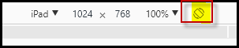
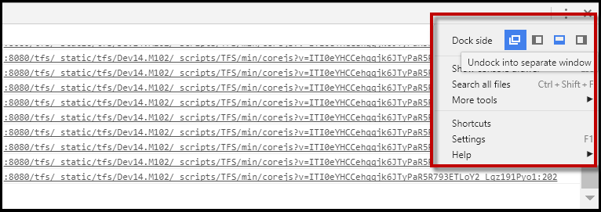

The June 2017 release (Update 12) contains a visual redesign of the EMS Room Sign App. The EMS Room Sign App is now optimized to display on tablets—specifically the iPad, iPad Mini, and 8” Samsung Tab A. This improvement, however, makes demoing on a laptop browser more difficult. The EMS Room Sign App will not display properly from your laptop unless you follow the instructions below.
1. Open the EMS Room Sign App in Chrome.
2. Press Crtrl-0 (zero) to reset the zoom.
3. Press F12 to open the dev tools.
4.If you do not see this toolbar at the top, press Crtl-Shift-M to enable it:

5. Choose iPad as the option. The highlighted image on the right allows you to select either portrait or landscape mode.
6. There will be another pane visible, on either the side or the bottom of the screen. Press the 3 dots in the top right corner of the pane, and then choose the ‘Undock into separate window’ option next to ‘Dock side’. That will allow you to completely remove this pane from the screen.

Press F11 to display the EMS Room Sign app in full screen mode.
Page tags: article:topic-guide